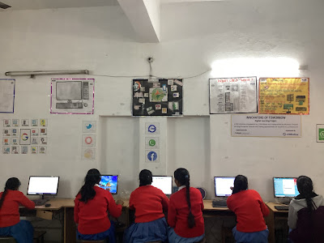
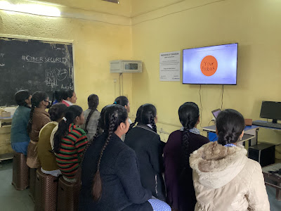

 A non-profit organization, Muskaan Dreams, in Lucknow has taken the initiative to improve computer literacy in government schools, aiming to bridge the digital gap and provide students with the skills they need to succeed in the digital world. According to recent studies, computer literacy in government schools in Uttar Pradesh is currently around 60%, indicating a significant gap in computer literacy levels, particularly among students in these schools. To address this issue, the NGO has launched a program, Innovators of Tomorrow to provide computer education in government schools in Lucknow. The program is funded by LTI and being implemented in around 22 government and aided schools in Lucknow. The program aims to increase access to computer facilities and provide training to teachers in computer science. The organization has established computer labs in selected government schools and is providing training to teachers to ensure that they are fully equipped to teach computer science. The program is also providing hands-on training to students to help them gain practical experience in using computers.
 The initiative has received positive feedback from students and teachers alike. Many students have expressed their excitement about the new computer labs and the opportunity to learn about technology. Teachers have also appreciated the training and support provided by the NGO, which has enabled them to better integrate computer education into their lessons.The NGO plans to expand the program to other government schools in Uttar Pradesh, with the goal of improving computer literacy in the state and providing students with the skills they need to succeed in the digital world. The organization believes that by investing in computer education, it is possible to help students develop the critical thinking and problem-solving skills they need to succeed in the future.The initiative has been widely praised by government officials, who have recognized the importance of computer literacy in today's digital world. The government has also pledged its support for the program, indicating that it is committed to providing quality computer education to students in government schools.